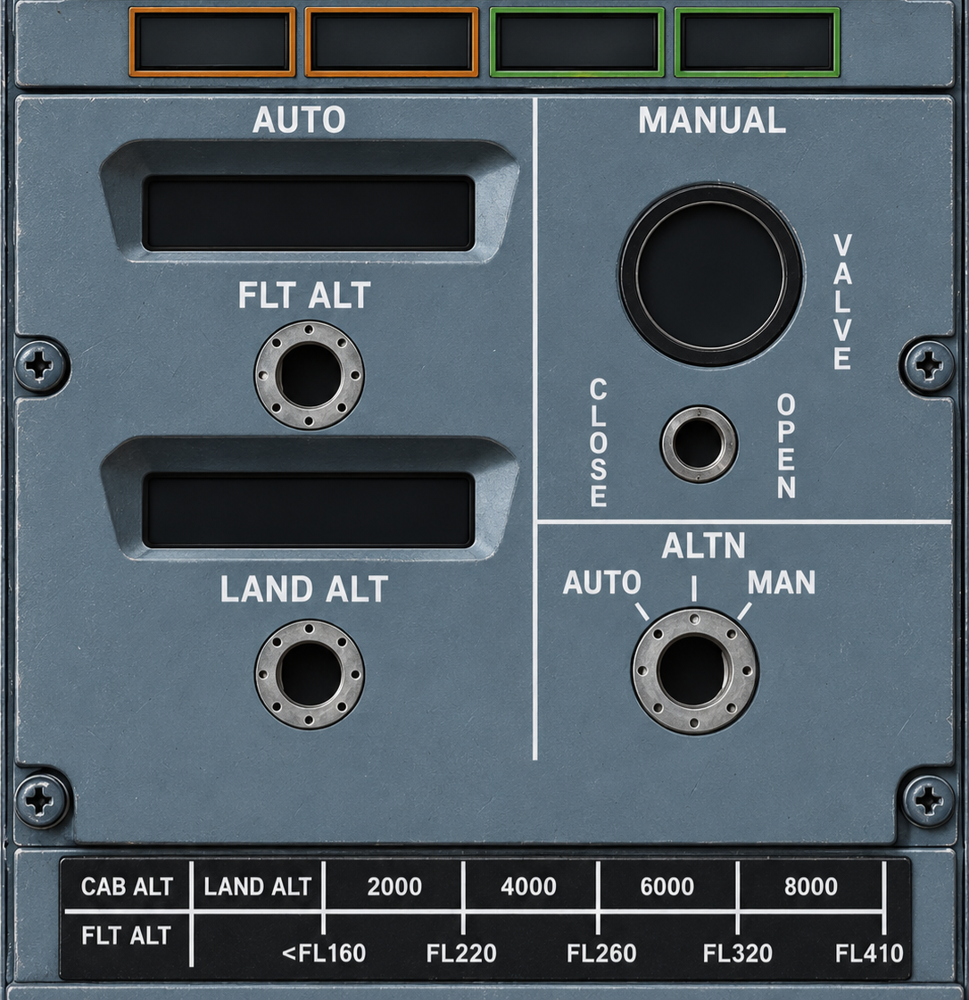

01. Pressurization Panel
DCPCS model only (AUTO/ALTN/MAN), not the older CPCS configuration.

02. Engine / Flight Inputs
Simulated sensor values; cabin pressure and valve aerodynamic response are not calculated from airflow.
03. Instructor Faults
Channel faults and sensor faults are educational injections; exact LRU fault-response wiring is not verified.
04. Live System Network
N1/N2 via Stall Management functional interface
↓
CONTROLLER 1
CONTROLLER 2
↓
MAIN OUTFLOW VALVE
05. Annunciations / Warning
06. Logic / Observations
AUTO FAIL thresholds: N1/N2 prepress after 1.5 s, differential >8.30 psid, rate magnitude >2,000 ft/min, cabin altitude >15,800 ft. The last three AUTO FAIL triggers require a controller-not-responding condition. Cabin horn is independently evaluated at altitude >10,000 ft.
07. Source / Event Trace
Referenced in the private Technical Database: FCOM 2.10.14–16 and 2.40.1–11. Not for flight.